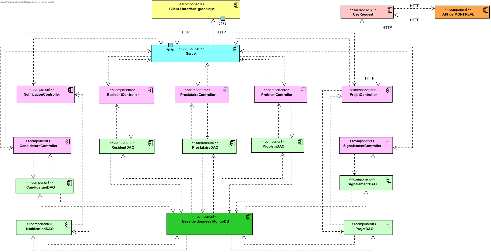

Rapport du projet MaVille
Mise à jour du projet
Cadre
Ce projet est dans le cadre du Cours IFT2255 - elle vise la conception et implantation des logiciels. Il s’agit ici du deuxième jalon, qui nous amène à concrétiser nos réflexions précédentes en développant une première version fonctionnelle de l’application MaVille. L’objectif principal est de mettre en pratique les notions vues en cours comme l’analyse des besoins, la modélisation et la conception orientée objet à travers une application en ligne de commande. En plus du développement, nous devons produire un rapport HTML structuré et maintenir notre travail sur GitHub tout au long du processus.
Contexte
La Ville de Montréal est régulièrement confrontée à de nombreux travaux publics et privés qui affectent la circulation et la qualité de vie des résidents. Les outils actuellement disponibles pour s’informer sur ces travaux, comme le service Info-Entraves, sont jugés insuffisants par les citoyens, qui se retrouvent souvent mal informés, ce qui génère un sentiment d’imprévisibilité et de frustration. Le Service des Travaux Publics de Montréal (STPM) souhaite donc une solution plus efficace pour assurer une meilleure communication entre les citoyens, les prestataires et la Ville. L’application MaVille répond à ce besoin en proposant plusieurs fonctionnalités comme:
- Consultation des travaux en cours ou planifiés.
- Réception de notifications ciblées.
- Signalement de problèmes routiers.
- Candidature à des projets de résolution de problèmes par les prestataires.
- Suivi et gestion des projets par le STPM.
L’application doit aussi intégrer une API ouverte de la Ville pour récupérer les données réelles des chantiers.
Repartition du travail
- Cyreanne
- Architecture et choix de conception + Rapport et Git
- Lallia
- Implémentation + test unitaire (en collaboration avec Josué)
- Roxanne
- Diagramme de Classe bas niveau
- Zachary
- Diagramme de séquence
- Josué
- Implémentation + test unitaire (en collaboration avec Lallia)
Corrections
Les cas d'utilisation, le diagramme de cas d'utilisations, le diagramme d'activité et le diagramme de classes ont été adaptés pour intégrer les nouvelles exigences et les remarques du DM précédent.
Architecture
MaVille suit le style d'architecture en couches pour pouvoir garantir une séparation claire entre les responsabilités et avoir une maintenabilité qui est meilleure
Elle intègre aussi une architecture REST et une API fourni par la ville.
- Couche client gérant l'interaction avec l'utilisateur.
- Couche server contenant la logique fonctionnelle.
- Couche d'accés aux données se chargeant de l'initialisation et du stockage des données.
Utilisateurs et leurs moyens de communiquer avec l'application
- Résident : peuvent consulter les travaux, faire des signalements et gérer les notifications.
- Prestataire : peuvent soumenttre des projets de travaux, mettre à jour les informations sur le déroulement des travaux.
- Agent de la STPM : peuvent valider ou rejetter les demandes pour les projets, affecte des prioritês aux problèmes signalés. Dans notre implémentation, il est représenté par le serveur qui réalise ces processus de manière automatique et aléatoire.
Composants liées au style d'architecture
- Couche client : affiche les menus, capte les entrées utilisateurs et redirige vers les bons cas d'utilisation
- Couche métier : traite les cas d'utilisation comme le signalement, les notifications etc...
- Couche d'accès aux données : gère les entités comme les travaux, les projets, les problèmes, les utilisateurs dans des fichiers ou dans une base de données
Composants additionnelles jouant un rôle clé
- Le composant UseRequest dans le package hooks permet de faciliter la communication entre le server et le client en centralisant la logique de requête HTTP etd e réception des réponses.
Espace de stockage ou base de données
L'application stocke :
- Les utilisateurs, les projets, les signalements et les problèmes etc...
Services externes ou API
On va intégrer l'application à l'API de la ville, qui fournit déjà des données sur les travaux en cours.
Diagramme des processus métier mise à jour

Diagramme du domaine métier mise à jour

Diagrammes de séquence du Cas d'utilisation Signaler un problème Routier
Diagrammes de séquence du Cas d'utilisation Consulter les notifications
Diagramme de cas d'utilisation mise à jour

Justification du choix du design
L'architecture choisie, comme dit plus haut, est une architecture en couches qui représente aussi une architecture REST.
La logique a été de séparer complètement les tâches dans l'application pour permettre une meilleur cohésion.
Nous avons trois packages principaux dans l'application.
Le premier est le package client. Il contient la classe MaVille et les classes Utilisateur, Prestataire, Resident, Notification, Projet, Signalement, FicheProbleme et Candidature.
La classe MaVille est celle avec laquelle le client (en Ligne de commande) communique. Elle lui affiche des prompts, recueille ses choix et ses entrées puis communique avec le reste de l'application pour chercher et lui renvoyer les informations dont il a besoin.
Ainsi, elle communique avec les autres classes du packages qui représentent chacune une entité de l'application (l'utilisateur, la fiche problème, un signalement, une candidature, etc.). Ces classes communiquent à leur tour avec le backend grâce aux deuxième package.
Le deuxième package est le package hooks. Il contient juste la classe UseRequest qui représente une abstraction de la logique d'envoi et de réception de requêtes HTTP à une API.
Cette classe est conçue pour centraliser cette logique et permettre un envoi et une réception facile des données à travers toutes l'application. Elle fait donc le pont entre la partie client et le package server.
Le troisième package est le package server. Il contient la classe Server, la Database et les controllers. Le Server, est un serveur Javalin. C'est lui qui intercepte, traite et redirige les requêtes client.
La classe Database comme son nom l'indique est l'endroit où on initialise les données à partir de l'API de Montréal et où on stocke les données de l'application entière. Elle contient en réalité une Map pour stocker chaque type d'entité.
En effet, pour chaque entité de l'application, il existe un Controller qui est chargé de s'occuper de tout ce qui la concerne.
Chaque Controller communique avec la base de données en impactant uniquement la Map qui le concerne. Cette division de la logique permet de réduire le couplage parce que en cas de bugs et de problème lors d'une procédure, on sait exactement à quel Controller s'adresser et ça facilite le debugging.
Ainsi, grâce à l'architecture en couches, la logique est répartie de manière à permettre une plus forte cohésion tout au long de l'application à travers la répartition des modules.
Et à travers l'architecture REST, on a un moyen plus efficace et plus centralisé de communication, ce qui réduit les relations d'interdépendances entre les classes et qui permet donc un faible couplage. Cela facilite aussi de nouvelles intégrations et des améliorations à l'application.